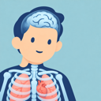

测量以全身高度的百分比显示。
全身解剖
探索人体结构
在探索中学习
主动回忆，让知识留得更久
选择练习范围，开始一次 5 题练习。
观察位置，理解关系，再用练习检验记忆。
系统图层用 + / − 在隐藏、轮廓、半透明和实体之间切换。
结构搜索搜索结构名称，点击结果添加并定位结构。
解剖与多选解剖模式点击即隐藏；多选可同时隔离、隐藏多个结构。
画图与测量在模型表面拖动绘制；测量模式点击两个位置。
生命律动选择器官或关节动作，调节速度和进度，随时暂停或复位。
触屏操作单指拖动旋转，双指缩放或平移。图层与详情可展开或收起。
快捷键Ctrl+Z 撤销，Ctrl+Y 重做，Esc 退出当前工具。